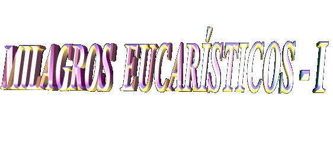
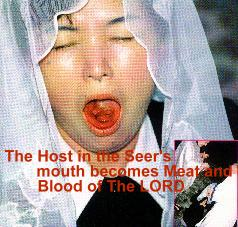
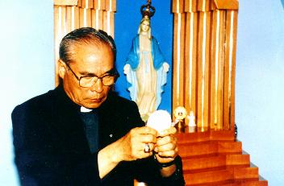
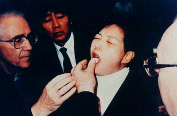
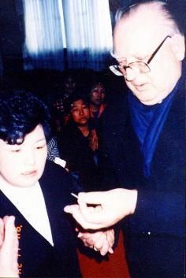
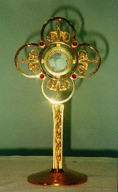

VERDAD CRISTIANA
- El Nuevo Testamento
ense�a que DIOS se hizo Hombre y vino habitar entre nosotros, encarn�ndose
en JESUCRISTO, Segunda Persona de la Trinidad.
VERDAD CRISTIANA
- El Nuevo Testamento
ense�a que DIOS se hizo Hombre y vino habitar entre nosotros, encarn�ndose
en JESUCRISTO, Segunda Persona de la Trinidad. 
VERDAD CRISTIANA
- El Nuevo Testamento
ense�a que DIOS se hizo Hombre y vino habitar entre nosotros, encarn�ndose
en JESUCRISTO, Segunda Persona de la Trinidad.
JES�S ejecut�
de modo admirable SU preciosa Misi�n de Amor, haciendo la redenci�n de la
humanidad ante el CREADOR y dejando los medios necesarios
a nosotros con el objetivo de que las personas sean felices aqu� en la
Tierra y alcancen la salvaci�n eterna en el Cielo. JES�S est� presente
en los Sacramentos y en el Sacerdocio Eclesi�stico, de la misma manera
que est� presente por la gracia, en cada criatura que sigue SUS ense�amientos.
Escondido a los ojos del mundo, CRISTO el verdadero DIOS y verdadero
Hombre, est� presente sobre todo en el Sacramento de la Eucarist�a, en
Cuerpo, Sangre, Alma y Divinidad. La m�s peque�a part�cula consagrada,
esconde misteriosamente SU divinidad, SU gloria y poder, porque el SE�OR
quiere que nosotros nos acerquemos de �L por amor, sin cualquier inter�s
y sin tener la intenci�n de buscar alg�n beneficio, pero modestamente pobres
en esp�ritu y puros en intenciones. �L quiere que SUS hijos revelen estar
arrepentidos de sus culpas y tengan la intenci�n de retractar todas las sus
transgresiones, por medio del Sacramento de la Confesi�n, conscientes de
que en la Sagrada Comuni�n �L est� Realmente Presente y �L d�rse
integralmente en la porci�n m�s peque�a del sacramento, porque
�L es DIOS Vivo y Verdadero, Sacramento de
Vida y Amor.
CREADOR y dejando los medios necesarios
a nosotros con el objetivo de que las personas sean felices aqu� en la
Tierra y alcancen la salvaci�n eterna en el Cielo. JES�S est� presente
en los Sacramentos y en el Sacerdocio Eclesi�stico, de la misma manera
que est� presente por la gracia, en cada criatura que sigue SUS ense�amientos.
Escondido a los ojos del mundo, CRISTO el verdadero DIOS y verdadero
Hombre, est� presente sobre todo en el Sacramento de la Eucarist�a, en
Cuerpo, Sangre, Alma y Divinidad. La m�s peque�a part�cula consagrada,
esconde misteriosamente SU divinidad, SU gloria y poder, porque el SE�OR
quiere que nosotros nos acerquemos de �L por amor, sin cualquier inter�s
y sin tener la intenci�n de buscar alg�n beneficio, pero modestamente pobres
en esp�ritu y puros en intenciones. �L quiere que SUS hijos revelen estar
arrepentidos de sus culpas y tengan la intenci�n de retractar todas las sus
transgresiones, por medio del Sacramento de la Confesi�n, conscientes de
que en la Sagrada Comuni�n �L est� Realmente Presente y �L d�rse
integralmente en la porci�n m�s peque�a del sacramento, porque
�L es DIOS Vivo y Verdadero, Sacramento de
Vida y Amor.
LOS INCR�DULOS
- Desgraciadamente
hay muchas personas que no creen, que no aceptan y no tienen el respeto
m�s peque�o por esta verdad y hacen tambi�n una interpretaci�n extra�a
y falsa sobre la expresi�n
"banquete de la eucarist�a ", consider�ndola al pie de la letra, o sea, como si fuera justo
una comida, memoria de la �ltima Cena que el SE�OR hizo con los
Ap�stoles en Jerusal�n. Y as�, ellos consideran la Sagrada
Comuni�n como un "s�mbolo"
de la presencia de JESUS y no
como "SU Presencia Real
y Verdadera" que en la verdad es. No creyendo,
aunque siendo criaturas como nosotros, ni�os del Mismo CREADOR,
ellos hacen su propia opci�n de vida. Dejando el camino de la Verdad
ellos tendr�n que sujetarse a las consecuencias de su decisi�n.
El DIOS
omnipotente derrama sin interrupciones, independientemente de cualquier
merecimiento nuestro, un inmenso manantial de gracias sobre las personas
de todas las generaciones. En SU bondad infinita de PADRE, no hace
distinciones y ni discriminaciones entre las personas "de bien" y
aquellas que "no son
buenas". SUS gracias son para todos. Las
criaturas con su libertad de opci�n, es que van dar la bienvenida
o no, a la "donaci�n
Divina" que son
proporcionadas a nosotros. Podr�amos comparar diciendo que, la
voluntad de las personas a recepci�n de las gracias, opera como
si fuese una v�lvula del coraz�n: existen aqu�llos que abren el coraz�n
y las reciben en cantidad, as� como hay otras personas que se quedan
cerrados a los innumerables beneficios de DIOS. Tambi�n entre
aquellos que se abren, hay un grado variado de intensidad amorosa
en la solicitaci�n y recepci�n de las gracias. Hay aqu�llos que se
abren mucho m�s, que son m�s disponibles, m�s celosos,
sinceros y creyentes, que buscan ser m�s competentes y
esmerados, y aqu�llos que se abren menos, que no son tan
puntuales, que no poseen una s�lida perseverancia, que son
secos, impacientes en el tratamiento con las cosas sagradas y no
muy disponibles 
El Amor de DIOS es el mismo para todos SUS ni�os. Nosotros es que Lo acogemos en grandeza diferente, en virtud de la manera desigual que cada persona se presenta a recibirlo. Por consiguiente, los que se abren m�s y son m�s perseverantes, reciben mucho m�s gracias del SE�OR.
PRUEBA DEFINITIVA
- Siendo la Eucarist�a
el v�nculo m�s fuerte que realiza la uni�n entre todos los cristianos en si
y de ellos con DIOS, de una manera maravillosa e incontrovertible, el
CREADOR viene a demostrar al mundo a trav�s de la vidente Julia
Kim, que en la Santa Misa, en el momento de la Consagraci�n,
ocurre de verdad el fen�meno sobrenatural de la"Transubstansiaci�n". El ESP�RITU SANTO transforma de modo
verdadero, las especies de pan y vino en Cuerpo, Sangre, Alma
y Divinidad del SE�OR, pero ellas se quedan aparentemente con
los mismos aspectos de pan y vino. As�, en la Corea del Sur, en el
momento de la Comuni�n, en diversas oportunidades, cuando el sacerdote
puso la Hostia Consagrada en la lengua de la vidente, se�ora Julia Kim,
ella se transform� en el Cuerpo y en la Sangre del SE�OR, de manera
visible e impresionante, dejando perplejos de admiraci�n personas
del mundo entero, legos y autoridades religiosas que dieron
testimonio en varias ocasiones, en raz�n del extraordinario y
sobrenatural celo Divino a demostrar la Presencia Real de
JESUCRISTO en la SAGRADA EUCARISTIA.
FRECUENCIA DE LA
MANIFESTACI�N -
Los Milagros Eucar�sticos se repitieron por m�s
de 20 veces hasta hoy, en locales diferentes, incluso en el Vaticano,
siempre causando admiraci�n y emoci�n, en virtud de la grandeza
y claridad absoluta con que eso se pasa. Adem�s de esas manifestaciones,
otras tambi�n han se pasado por medio de Julia Kim, poniendo en evidencia
la Sagrada Comuni�n. Por ejemplo, la vidente al coger agua en una Fuente
pr�xima a Capilla, en el fondo del recipiente apareci� la imagen de una
Hostia del tama�o grande. En el tejado de la Capilla, tambi�n
se vio en varias oportunidades, proyectadas por la luz del sol,
la imagen de un C�liz y de una Hostia. Hay muchas fotos y
varios v�deos sobre los fen�menos.
Por esa raz�n, con la intenci�n de testificar los fen�menos Eucar�sticos, en la secuencia daremos detalles y describiremos algunos de los eventos.
S�PTIMO MILAGRO
- �l se pas� en una
tal circunstancia, que la Iglesia Cat�lica en el mundo entero se dio cuenta
del hecho. Estaba presente el Nuncio Apost�lico de la Santa Sede en
Corea. El Arzobispo del Vaticano inform� al Director espiritual de la
vidente Fray Raymond Spies y las otras autoridades presentes,
que no estaba all� en la Capilla como un simple peregrino, pero
vino como representante oficial, en la Celebraci�n Eucar�stica
del 24 de noviembre de 1994, conmemorativa del 2� Aniversario del
derramamiento de aceite perfumado por la imagen de NUESTRA
SE�ORA.
En la presencia del Nuncio Apost�lico todos oraban, mientras nuestra MADRE BENDITA particularmente hablaba con Julia, en la preparaci�n del milagro admirable que se pas�. Primero NUESTRA SE�ORA dijo que Julia fuese a recibir la bendici�n del Arzobispo y del Fray Spies. Despu�s ELLA le envi� el Arc�ngel San Miguel que le dio una Hostia Consagrada, para ella conducirla a los dos prelados. La Hostia que el Arc�ngel trajo era del tama�o grande, similar aqu�llas que los sacerdotes usan en las celebraciones de las Misas. San Miguel no era visible a las personas en la Capilla, s�lo era visto por la vidente que acompa�� todos sus movimientos. Sin embargo, las personas pudieron ver la Sagrada Part�cula aparecer de s�bito entre los dedos de Julia. En la Hostia estaba grabada la imagen de una Cruz entre dos letras: (Alfa) y (Omega), de la misma manera como aparecieron en una foto de otro milagro proporcionado por NUESTRA SE�ORA el 27 de junio de 1993. La Part�cula tra�da por San Miguel ya estaba rota en dos partes cuando Julia la recibi�, por ese motivo ella qued� con una parte en la mano derecha y otra en la mano izquierda. De modo inesperado, por fuerza de una poderosa luz venida de cima, Julia cay�, pero mantuvo los dos pedazos de la Sagrada Hostia en las manos. En seguida, se levant� cuidadosamente y dio los dos pedazos al Nuncio y a Fray Spies. Los prelados tomaron comuni�n con uno de los pedazos y el otro, fue distribuido en porciones peque�as en orden de dar Comuni�n a las personas que estaban en la Capilla, totalmente perplejas, en completo asombro y temor, delante la grandeza de los eventos. Aunque fuese a la mitad de una Hostia grande, toda la gente en la Capilla, cerca de 70 personas, recibieron la Comuni�n. Admirados, muchos testificaron que simplemente era una experiencia que desafiaba la comprensi�n humana, y tambi�n eso, hizo recordarles el pasaje evang�lico de la multiplicaci�n de los panes. (Mateo 14,13-21).
En el momento
en que Julia recibi� el pedazo peque�o de la Sagrada Comuni�n en la lengua,
sorprendentemente 
En la secuencia, NUESTRA SE�ORA habl� a la Vidente, que aquella Hostia grande que el Arc�ngel trajo , deber�a ser consumida por un sacerdote, pero San Miguel no permiti� porque �l estaba en estado de pecado y JESUS no podr�a vivir en �l. Esta realidad hace presente una conclusi�n muy importante: durante la Comuni�n en las Santas Misas, las personas que est�n en pecado e insisten en recibir la Hostia Sagrada , ellos no reciben al SE�OR de verdad porque DIOS solo habita en los corazones limpios y puros. As� ellos reciben "trigo y agua y la propia condenaci�n."
Julia quiso
volver a su casa pues deseaba escribir los mensajes de NUESTRA
SE�ORA y d�rselos al Arzobispo. Mientras, al salir de la Capilla,
cuando ella caminaba con dificultades debido a los dolores continuos de
la crucifixi�n que recibi� en su cuerpo, nuestra MADRE BENDITA
llam� a ella de nuevo. Atendiendo la solicitaci�n, vino
pr�ximo a la imagen de la VIRGEN MARIA y tom� las manos de
Nuncio y de Fray Spies por solicitaci�n de la VIRGEN. Entonces
NUESTRA SE�ORA pregunt� a Julia, se ella deseaba recibir
la Sagrada Comuni�n una segunda vez. En esta oportunidad
el Arc�ngel trajo una Hostia m�s peque�a,
igual aqu�llas que los fieles reciben en las Misas, y dio
comuni�n a vidente. Cuando ella recibi� la Part�cula Sagrada en
su lengua, en lugar de la Part�cula quedarse en la posici�n
horizontal, asumi� la posici�n vertical, como si quisiera estar
en pie. El Arzobispo al ver la Part�cula aparecer de s�bito en
la boca de la vidente y observ�ndola en la posici�n vertical,
la quit� inmediatamente y 
Despu�s de todos estos acontecimientos el Nuncio Apost�lico qued� lleno de asombro y tan entusiasmado, que no consigui� dormir durante tres noches seguidas, pensando en aquellos extraordinarios hechos sobrenaturales. Cuidadosamente y con la m�s grande atenci�n, examin� las ocurrencias en Naju desde el principio en 1985 hasta aquella fecha, con el objetivo de preparar un dossier y registrar con detalles la sucesi�n de los hechos. Al mismo tiempo, el Arzobispo Victorinus Yoon de la Archidi�cesis de Kwangju que abraza la Parroquia de Naju, form� un comit� para preparar un proceso de investigaci�n en el orden de coleccionar documentos y verificar los eventos, como parte inicial del proceso can�nico.


El Nuncio Apost�lico examina la Hostia que fue retirada de la boca de Julia. - Ostensorio m�s peque�o con las Hostias.